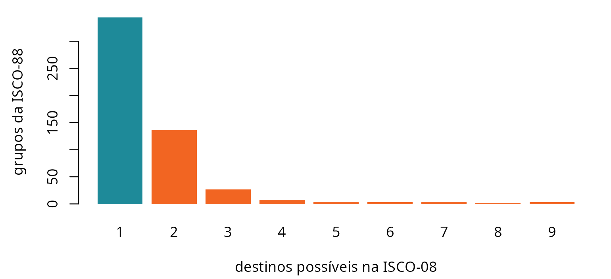
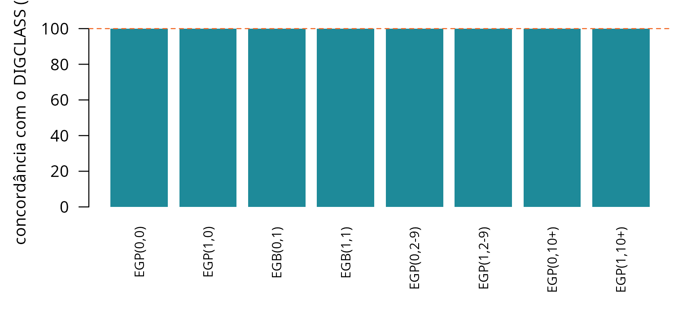
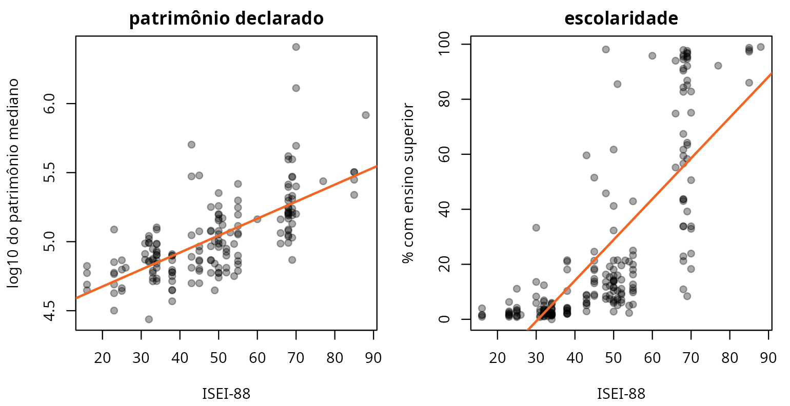
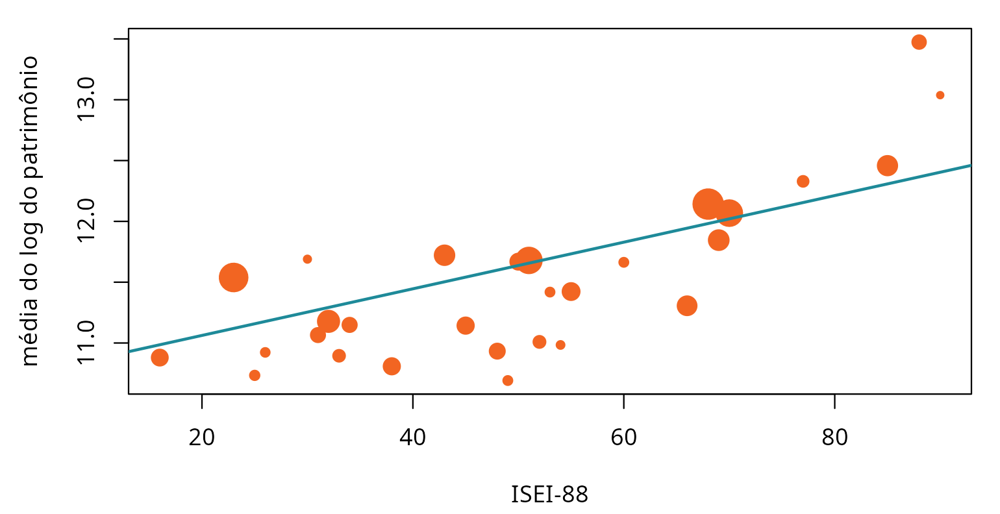
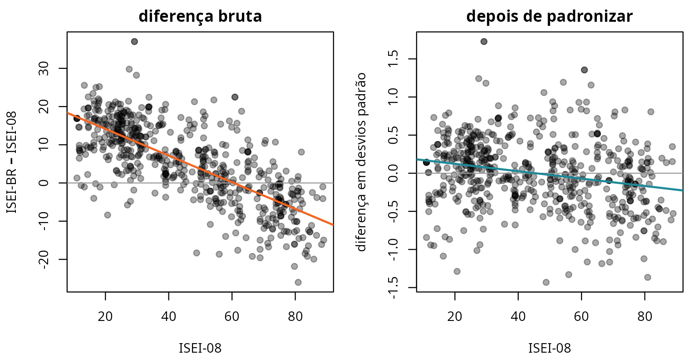
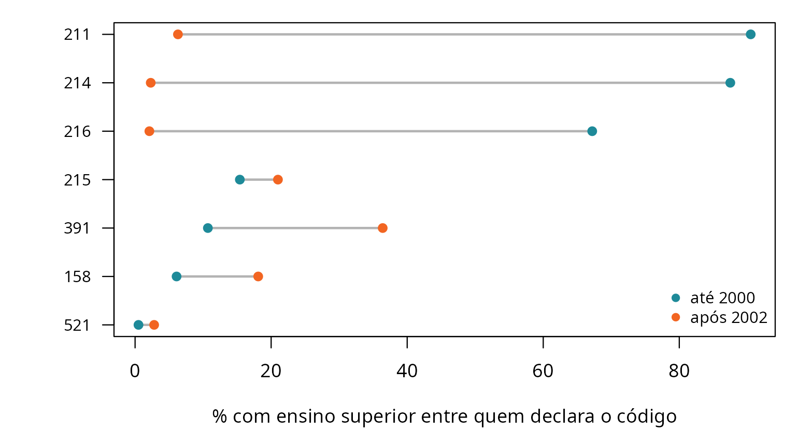
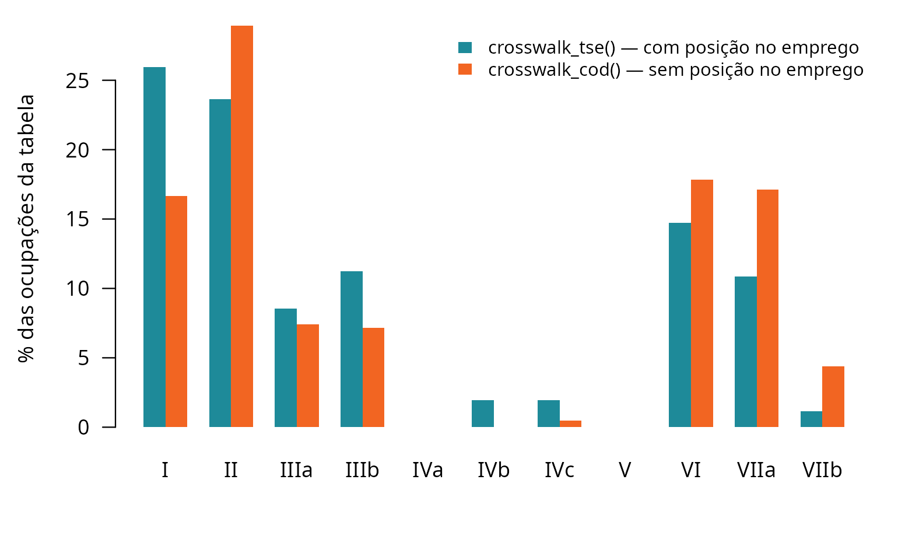

Provas de robustez: como o pacote se põe à prova
Fonte:vignettes/articles/robustez.Rmd
robustez.RmdUm pacote que traduz não tem sinal de erro. Se o dicionário puser o
médico na classe trabalhadora, nada quebra: a função devolve um vetor do
comprimento certo, o R CMD check passa, a análise roda e o
artigo sai. O erro só aparece na interpretação, meses depois, se
aparecer.
É por isso que a suíte de testes deste pacote é grande. A maior parte
dela é rotina — tipo de retorno, comprimento, NA onde deve
haver NA. Esta página é sobre as outras: as
provas que sustentam a afirmação de que a tradução está
certa. Cada uma responde a uma pergunta que um parecerista tem o direito
de fazer.
Todas as contas abaixo rodam ao construir esta página, sobre os dados que vêm instalados com o pacote. Nenhum número aqui foi digitado.
1. A ponte entre as duas ISCO não é bijetora — e o pacote não finge que é
O que poderia dar errado. A ISCO-88 e a ISCO-08 não são a mesma classificação renumerada: a de 2008 remontou famílias inteiras. Se o pacote tratasse a ponte como um simples “de-para”, traduzir de ida e voltar devolveria sempre o ponto de partida, e a perda de informação ficaria invisível.
Como se testa. Levar toda a ISCO-88 até a ISCO-08 pela tábua do ISMF, e trazê-la de volta pela tábua reversa — que é gerada por outro script.
b <- isco88_isco08
b$volta <- isco08_isco88$isco88[match(b$isco08, isco08_isco88$isco08)]
b$onde <- ifelse(is.na(b$volta), "não volta",
ifelse(b$volta == b$isco88, "volta ao mesmo", "volta a outro"))
tab <- table(b$onde)
round(100 * prop.table(tab), 1)
#>
#> não volta volta a outro volta ao mesmo
#> 0.2 30.9 68.9
op <- par(mar = c(4, 9, 1, 2))
x <- barplot(rev(tab), horiz = TRUE, las = 1, col = c(VERDE, LARANJA, LARANJA),
border = NA, xlab = "grupos da ISCO-88", cex.names = 0.9)
text(rev(tab), x, rev(tab), pos = 4, cex = 0.85, xpd = NA)
par(op)O que significa. Cerca de 69% volta ao ponto de
partida. O terço restante não é erro: é a remontagem
real da classificação, e o pacote a expõe em vez de escondê-la. A
consequência prática está documentada em
?isco08_para_isco88: essa porta serve para recuperar
medidas que só existem na ISCO-88, e não para converter um dado
codificado em 2008 como se fosse de 1988.
Se a prova falhasse — isto é, se a volta desse 100% —, seria sinal de que uma das duas tábuas foi gerada a partir da outra, e não das sintaxes originais. Elas seriam a mesma afirmação contada duas vezes, e a concordância entre as duas não valeria nada.
2. A ambiguidade da OIT foi preservada, não resolvida no escuro
O que poderia dar errado. Um mesmo grupo da ISCO-88 pode corresponder a vários da ISCO-08. Escolher um “melhor” destino e seguir em frente é o caminho cômodo — e apaga do dado a informação de que ali houve escolha.
amb <- table(isco88_isco08$n_alternativas)
op <- par(mar = c(4.2, 4.5, 1, 1))
barplot(amb, col = ifelse(names(amb) == "1", VERDE, LARANJA), border = NA,
xlab = "destinos possíveis na ISCO-08", ylab = "grupos da ISCO-88")
par(op)65% dos grupos têm destino único. Os demais viajam com o número de
alternativas na coluna n_alternativas, e
crosswalk_tse() o devolve na coluna qualidade,
que marca como ambígua toda tradução em que houve mais
de um caminho.
O que significa. Uma tabela auditável não pode apresentar um ISEI derivado de destino único e outro derivado de uma escolha entre nove com a mesma tipografia. O erro de medida resultante não é ruído aleatório: ele é maior justamente no topo, que foi onde a ISCO-08 mais refinou.
3. Duas implementações independentes da mesma fonte
O que poderia dar errado. O EGP deste pacote é um
porte para R de duas sintaxes SPSS de Ganzeboom —
iskopromo.sps e iskoegp.sps. Um porte pode
estar internamente coerente e errado do começo ao fim, e nenhum teste
interno pegaria isso, porque todos comparariam o porte consigo
mesmo.
Como se testa. Comparando com o porte que
outra pessoa fez das mesmas sintaxes:
o pacote DIGCLASS, de Cimentada. A comparação percorre as
oito células da grade posição no emprego × subordinados, que é onde
vivem todas as regras de promoção do esquema.
tab <- DIGCLASS::all_schemas$isco88_to_egp11
chave <- sprintf("%04d", as.integer(tab[[1]]))
celulas <- list(
list("EGP(0,0)", FALSE, 0), list("EGP(1,0)", TRUE, 0),
list("EGB(0,1)", FALSE, 1), list("EGB(1,1)", TRUE, 1),
list("EGP(0,2-9)", FALSE, 5), list("EGP(1,2-9)", TRUE, 5),
list("EGP(0,10+)", FALSE, 11), list("EGP(1,10+)", TRUE, 11))
prova <- vapply(celulas, function(cel) {
esperado <- as.integer(tab[[cel[[1]]]])
obtido <- isco88_para_egp(chave, rotulo = FALSE, avisar = FALSE,
conta_propria = rep(cel[[2]], length(chave)),
n_supervisionados = rep(cel[[3]], length(chave)))
ok <- !is.na(esperado) & !is.na(obtido)
c(codigos = sum(ok), concordancia = mean(obtido[ok] == esperado[ok]))
}, numeric(2))
colnames(prova) <- vapply(celulas, `[[`, character(1), 1)
prova
#> EGP(0,0) EGP(1,0) EGB(0,1) EGB(1,1) EGP(0,2-9) EGP(1,2-9)
#> codigos 534 534 534 534 534 534
#> concordancia 1 1 1 1 1 1
#> EGP(0,10+) EGP(1,10+)
#> codigos 534 534
#> concordancia 1 1
op <- par(mar = c(6.5, 4.5, 1, 1))
barplot(100 * prova["concordancia", ], ylim = c(0, 105), border = NA,
col = VERDE, las = 2, cex.names = 0.8,
ylab = "concordância com o DIGCLASS (%)")
abline(h = 100, col = LARANJA, lty = 2)
par(op)O que significa. Concordância integral em todas as oito células, sobre 534 códigos em cada uma. Duas pessoas leram a mesma sintaxe separadamente e chegaram à mesma tabela. É a única validação do pacote que não depende dele mesmo nem da fonte que ele próprio leu.
A prova tem uma fragilidade, e ela está registrada.
O DIGCLASS não é distribuído por repositório nenhum —
instala-se do HEAD do GitHub. A referência poderia, portanto, mudar sob
o teste sem aviso. A versão e o commit da conferência estão
anotados em inst/extdata/PROVENIENCIA.yml, na seção
conferencia_cruzada, e o
data-raw/00_confere_proveniencia.R avisa quando o que está
instalado diverge do que está registrado. Sem esse registro, “bate com
uma implementação independente” seria uma frase sem data.
4. A medida se sustenta contra um critério externo a ela
O que poderia dar errado. Tudo até aqui é coerência interna. Um crosswalk pode ser perfeitamente consistente e ordenar as ocupações de modo que não corresponde a nada no mundo.
Como se testa. Contra duas variáveis que o próprio
TSE coleta e que não entram na construção de régua
nenhuma: o patrimônio declarado e o grau de instrução,
agregados por ocupação em tse_validacao.
v <- tse_validacao
v$isei <- isco88_para_isei(tse_isco$isco88[match(v$cod_tse, tse_isco$cod_tse)])
v <- v[!is.na(v$isei), ]
vb <- v[!is.na(v$mediana_patrimonio), ]
op <- par(mfrow = c(1, 2), mar = c(4.2, 4.2, 2, 1), cex = 0.8)
plot(vb$isei, log10(vb$mediana_patrimonio), pch = 19, col = CINZA,
xlab = "ISEI-88", ylab = "log10 do patrimônio mediano",
main = "patrimônio declarado")
abline(lm(log10(mediana_patrimonio) ~ isei, vb), col = LARANJA, lwd = 2)
plot(v$isei, v$pct_superior, pch = 19, col = CINZA,
xlab = "ISEI-88", ylab = "% com ensino superior",
main = "escolaridade")
abline(lm(pct_superior ~ isei, v), col = LARANJA, lwd = 2)
par(op)
c(patrimonio = round(cor(vb$isei, log(vb$mediana_patrimonio)), 3),
escolaridade = round(cor(v$isei, v$pct_superior), 3))
#> patrimonio escolaridade
#> 0.681 0.765O que significa. As duas nuvens sobem. A régua não foi construída para prever nem patrimônio nem diploma, e prevê os dois. Se esta prova falhasse, é a medida que teria quebrado, e não o teste — é o único invariante do pacote com essa propriedade. A discussão completa está no artigo Validação contra um critério externo.
5. O número do artigo se refaz sem o microdado
O que poderia dar errado. A correlação entre ISEI e patrimônio no nível do indivíduo — não da ocupação — depende de 1,1 milhão de candidaturas que não podem ser publicadas. Um número assim, digitado na documentação, é inverificável por qualquer leitor, e sobrevive errado a uma troca de fonte. Foi exatamente o que aconteceu neste pacote, duas vezes.
Como se testa. Publicando as estatísticas
suficientes em vez do microdado. A tabela
tse_dispersao_patrimonio traz, por faixa de ISEI, o número
de casos e as somas de log do patrimônio e do seu quadrado — e a
correlação individual se reconstrói delas por identidade algébrica.
d <- tse_dispersao_patrimonio
N <- sum(d$n)
sx <- sum(d$isei88 * d$n); sy <- sum(d$soma_log)
sxx <- sum(d$isei88^2 * d$n); syy <- sum(d$soma_log2)
sxy <- sum(d$isei88 * d$soma_log)
r_individual <- (N * sxy - sx * sy) / sqrt((N * sxx - sx^2) * (N * syy - sy^2))
c(candidaturas = N, r_individual = round(r_individual, 4))
#> candidaturas r_individual
#> 1103019.0000 0.2074
op <- par(mar = c(4.2, 4.5, 1, 1))
plot(d$isei88, d$media_log, pch = 19, col = LARANJA,
cex = 0.6 + 2.2 * sqrt(d$n / max(d$n)),
xlab = "ISEI-88", ylab = "média do log do patrimônio")
abline(lm(media_log ~ isei88, d, weights = d$n), col = VERDE, lwd = 2)
par(op)O que significa. O ponto é grande onde há muitos candidatos. Quem instalou o pacote refaz o número do artigo com quatro linhas, sem pedir dado a ninguém — e a próxima troca de microbase se propaga sozinha, porque não há número digitado a atualizar.
6. Escalas diferentes enganam: padronizar antes de subtrair
O que poderia dar errado. O ISEI-BR e o ISEI-08 medem a mesma coisa em réguas de dispersão diferente. Subtrair uma da outra e ler a diferença como “esta ocupação subiu” produz uma lista que é, em boa parte, a lista de quem estava embaixo — porque numa escala mais estreita o topo cai e a base sobe por construção.
Como se testa. Correlacionando a diferença com o ponto de partida. Se a diferença fosse substantiva, essa correlação seria perto de zero.
z <- function(x) (x - mean(x)) / sd(x)
# Duas unidades de análise, porque as duas importam: a célula da ISCO-08, que é
# onde a régua foi estimada, e o código do TSE, que é onde ela é usada.
celulas <- merge(isco08_isei_br[c("isco08", "isei_br")],
isco08_medidas[c("isco08", "isei08")])
celulas <- celulas[complete.cases(celulas), ]
cods <- data.frame(isei08 = tse_para_isei08(tse_isco$cod_tse),
isei_br = tse_para_isei_br(tse_isco$cod_tse))
cods <- cods[complete.cases(cods), ]
conta <- function(w) c(
n = nrow(w),
sd_isei08 = sd(w$isei08),
sd_isei_br = sd(w$isei_br),
bruta = cor(w$isei_br - w$isei08, w$isei08),
padronizada = cor(z(w$isei_br) - z(w$isei08), w$isei08))
round(rbind(`célula da ISCO-08` = conta(celulas),
`código do TSE` = conta(cods)), 3)
#> n sd_isei08 sd_isei_br bruta padronizada
#> célula da ISCO-08 590 21.743 15.824 -0.731 -0.230
#> código do TSE 258 21.581 14.508 -0.868 -0.155
op <- par(mfrow = c(1, 2), mar = c(4.2, 4.2, 2, 1), cex = 0.8)
plot(celulas$isei08, celulas$isei_br - celulas$isei08, pch = 19, col = CINZA,
xlab = "ISEI-08", ylab = "ISEI-BR − ISEI-08", main = "diferença bruta")
abline(h = 0, col = "grey60"); abline(lm(I(isei_br - isei08) ~ isei08, celulas),
col = LARANJA, lwd = 2)
plot(celulas$isei08, z(celulas$isei_br) - z(celulas$isei08), pch = 19, col = CINZA,
xlab = "ISEI-08", ylab = "diferença em desvios padrão",
main = "depois de padronizar")
abline(h = 0, col = "grey60")
abline(lm(I(z(isei_br) - z(isei08)) ~ isei08, celulas), col = VERDE, lwd = 2)
par(op)O que significa. À esquerda, a reta desce com força: a “queda” de uma ocupação prevê-se em boa parte pelo lugar de onde ela partiu, e o efeito é ainda maior na unidade em que a régua é de fato usada, o código do TSE. À direita, depois de igualar média e desvio, quase não há inclinação — o que sobra ali é a discordância de verdade entre a régua brasileira e a importada.
Esta prova nasceu de um erro publicado. Até a versão 0.5.1 a documentação trazia uma lista de “quem sobe e quem desce” lida sobre a diferença bruta. Com as escalas igualadas, a lista muda: entram entre as maiores altas o médico e o diretor de empresas, que a leitura bruta escondia. O que sobrevive intacto — segurança pública sobe, clero e artistas descem — sobrevive porque é maior do que o artefato.
7. O cadastro do TSE muda sob os pés
O que poderia dar errado. Em 2002 o TSE trocou a tabela de ocupações. Alguns códigos foram reaproveitados: o mesmo número passou a designar outra ocupação. Uma série de 1998 a 2024 agrupada só pelo código mistura duas ocupações diferentes na mesma linha, em silêncio.
r <- tse_quebra_2002[tse_quebra_2002$tipo == "reutilizado", ]
r[order(r$similaridade),
c("cod_tse", "rotulo_ate_2000", "rotulo_apos_2002", "similaridade")]
#> cod_tse rotulo_ate_2000
#> 5 214 DELEGADO DE POLICIA
#> 6 391 CHEFE INTERMEDIARIO
#> 7 215 OCUPANTE DE CARGO DE DIRECAO E ASSESSORAMENTO SUPERIOR
#> 8 216 OFICIAIS DAS FORCAS ARMADAS E FORCAS AUXILIARES
#> 9 521 GOVERNANTA DE HOTEL, CAMAREIRO, PORTEIRO, COZINHEIRO E GARCOM
#> 13 158 DESENHISTA TÉCNICO
#> 25 211 PROCURADOR E ASSEMELHADOS
#> rotulo_apos_2002 similaridade
#> 5 ESCULTOR E PINTOR 0.000
#> 6 TAQUÍGRAFO E ESTENÓGRAFO 0.000
#> 7 ARTISTA PLÁSTICO E ASSEMELHADOS 0.100
#> 8 EMBALADOR, EMPACOTADOR E ASSEMELHADOS 0.111
#> 9 GOVERNANTA 0.125
#> 13 TÉCNICO EM INFORMÁTICA 0.250
#> 25 ESTIVADOR, CARREGADOR E ASSEMELHADOS 0.400Como se testa. Contra a escolaridade das próprias candidaturas: se o código passou a designar outra ocupação, o perfil educacional dos que o declaram tem de saltar na virada — e saltar mais do que a tendência geral do período, que sobe para todo mundo.
r <- r[order(r$pct_superior_ate_2000), ]
op <- par(mar = c(4.2, 5, 1, 1))
plot(range(c(r$pct_superior_ate_2000, r$pct_superior_apos_2002)),
c(1, nrow(r)), type = "n", yaxt = "n",
xlab = "% com ensino superior entre quem declara o código", ylab = "")
segments(r$pct_superior_ate_2000, seq_len(nrow(r)),
r$pct_superior_apos_2002, seq_len(nrow(r)), col = "grey70", lwd = 2)
points(r$pct_superior_ate_2000, seq_len(nrow(r)), pch = 19, col = VERDE)
points(r$pct_superior_apos_2002, seq_len(nrow(r)), pch = 19, col = LARANJA)
axis(2, seq_len(nrow(r)), r$cod_tse, las = 1, cex.axis = 0.85)
legend("bottomright", c("até 2000", "após 2002"), pch = 19, bty = "n",
col = c(VERDE, LARANJA), cex = 0.85)
par(op)O que significa. Cinco dos sete saltam muito, e no
sentido que a troca de rótulo prevê: o 214 sai de DELEGADO
DE POLICIA, com quase 90% de ensino superior, e chega a ESCULTOR E
PINTOR, com quase nenhum; o 211 faz o mesmo percurso de
PROCURADOR a ESTIVADOR. É por isso que toda função de tradução aceita
ano: tse_para_isei(214, ano = 1998) e
tse_para_isei(214, ano = 2010) devolvem coisas diferentes,
e devem.
Dois deles — o 215 e o 521 — quase não se
movem nesta variável, e vale dizer por quê em vez de esconder. A
escolaridade é uma evidência, não a definição: a
classificação como reutilizado vem da similaridade entre os rótulos
(0,125 para o 521, que sai de um agregado de hotelaria e
chega a GOVERNANTA), e no caso do 521 quem separa as duas
ocupações é a composição por sexo, não o diploma. Uma prova que só olha
uma variável acerta cinco de sete; é a tabela inteira de
tse_quebra_2002 que sustenta os outros dois.
Esta prova pegou um erro dentro do próprio pacote.
Até a 0.5.1 a tabela tse_validacao era construída agrupando
por código sem respeitar a vigência — o pacote mandava passar
ano e não passava em casa. O 214 publicava
30,6% de ensino superior, que era o delegado contaminando o escultor;
hoje publica 2,3%.
8. O EGP sai degradado quando o código não carrega posição no emprego
O que poderia dar errado. O esquema EGP precisa de três coisas: a ocupação, a posição no emprego (empregado ou conta própria) e o número de subordinados. O código do TSE traz a primeira e, no dicionário do pacote, uma marca para a segunda. A CBO e a COD trazem só a ocupação. Aplicar o esquema mesmo assim devolve uma coluna que parece completa e não é.
colapsa <- function(x) sub(":.*", "", x[!is.na(x)])
a <- table(factor(colapsa(crosswalk_tse()$egp),
levels = c("I","II","IIIa","IIIb","IVa","IVb","IVc",
"V","VI","VIIa","VIIb")))
b <- table(factor(colapsa(crosswalk_cod()$egp), levels = names(a)))
op <- par(mar = c(4.2, 4.5, 1, 1))
m <- barplot(rbind(100 * a / sum(a), 100 * b / sum(b)), beside = TRUE,
col = c(VERDE, LARANJA), border = NA, las = 1,
ylab = "% das ocupações da tabela")
legend("topright", c("crosswalk_tse() — com posição no emprego",
"crosswalk_cod() — sem posição no emprego"),
fill = c(VERDE, LARANJA), border = NA, bty = "n", cex = 0.85)
par(op)O que significa. O gráfico mostra duas degradações, e elas não são iguais.
Em IVb e IVc — o conta própria sem empregados e o proprietário rural — a barra laranja é zero ou quase, e a verde não. A diferença é inteira da marca de posição no emprego que o dicionário do TSE carrega. Sem ela, essas ocupações vão para onde a ocupação sozinha as manda: o agricultor conta como trabalhador agrícola, e a pequena burguesia acaba distribuída entre a classe de serviço e a classe trabalhadora. Isso é inversão de classe, não arredondamento.
Em IVa e V as duas barras são zero.
Aí nem o TSE resolve: separar IVa de IVb exige o número de
subordinados, que nenhuma das quatro portas do pacote tem.
Todos os empregadores caem em IVb, e V — os técnicos de nível inferior e
supervisores manuais — fica subestimada. É por isso que
?crosswalk_tse manda preferir os colapsos de 7 ou 5 classes
para publicar: são os que não dependem dessa distinção.
O pacote não pode consertar isso — a informação não está no código —,
mas pode dizê-lo: a advertência está em ?crosswalk_cod,
?crosswalk_cbo2002 e ?crosswalk_cbo94, e a
saída para quem precisa de uma estimativa é o
isco_posicao_br, que traz a proporção observada de conta
própria e de empregadores por grupo da ISCO-88 na PNAD Contínua.
9. A fonte não pode mudar em silêncio
O que poderia dar errado. Nenhuma tabela deste
pacote é digitada: todas são geradas por script a partir das sintaxes do
ISMF e da tábua do Ministério do Trabalho. Isso é uma virtude e um
risco. Se uma fonte for reeditada, ou se alguém corrigir um
.sps à mão, os dados do pacote mudam na próxima geração — e
um resultado já publicado deixa de replicar sem que nada avise.
Como se testa. As fontes viajam
dentro do pacote, e o sha256 de cada uma
está registrado.
yml <- system.file("extdata", "PROVENIENCIA.yml", package = "ocupacoesBR")
linhas <- readLines(yml, warn = FALSE, encoding = "UTF-8")
arquivos <- trimws(sub("^\\s*-?\\s*arquivo:\\s*", "",
grep("^\\s*-?\\s*arquivo:", linhas, value = TRUE)))
length(arquivos)
#> [1] 20
base <- system.file("extdata", "fontes", package = "ocupacoesBR")
head(basename(list.files(base, recursive = TRUE)), 4)
#> [1] "cbo2002_dominio.txt" "Estrutura_Ocupacao_COD.xls"
#> [3] "familias.txt" "isco0888.sps"O que significa. Um teste da suíte recalcula os 20 hashes e falha se qualquer um divergir. A mensagem de erro é explícita quanto ao que fazer: se a mudança foi deliberada, atualize o registro e regere os dados — nunca só o hash. É a diferença entre um pacote que gera os seus dados e um pacote que os tem.
Por que estas nove, e não outras
Cada uma responde a um modo distinto de o pacote estar errado sem parecer:
| A prova | O modo de falha que ela fecha |
|---|---|
| 1. Ida e volta | duas tábuas que são a mesma afirmação contada duas vezes |
| 2. Ambiguidade | escolha silenciosa apresentada como tradução exata |
3. DIGCLASS
|
porte internamente coerente e errado do começo ao fim |
| 4. Critério externo | medida consistente que não corresponde a nada |
| 5. Estatísticas suficientes | número inverificável, que sobrevive errado |
| 6. Padronização | artefato de escala lido como resultado substantivo |
| 7. Vigência | duas ocupações somadas na mesma série |
| 8. EGP degradado | coluna que parece completa e está estruturalmente vazia |
9. sha256
|
fonte que muda por baixo de um resultado publicado |
Três delas — a 6, a 7 e a 5 — existem porque o erro correspondente foi cometido e publicado neste pacote, e está descrito nas Novidades. Uma prova de robustez que ninguém nunca viu falhar costuma ser uma prova que não testa nada.